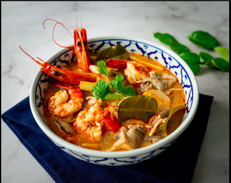

Tom Yum Goong es una sopa tailandesa clásica conocida por sus sabores intensos y especias aromáticas. Esta sopa agria y picante presenta una mezcla deliciosa de lemongrass, galangal y hojas de lima kaffir, combinada con camarones suculentos.

“La clave para un delicioso Tom Yum Goong radica en el equilibrio de sabores: dulce, agrio, salado y picante.”
| Ingrediente | Cantidad |
|---|---|
| Lemongrass | 2 tallos |
| Albahaca tailandesa | 1 taza |
| Hojas de lima kaffir | 3 hojas |
| Camarones | 500 g |
| Paso | Instrucción |
|---|---|
| 1 | Hervir el caldo por 10 minutos. |
| 2 | Añadir lemongrass, galangal y hojas de lima kaffir. |
| 3 | Agregar los camarones y cocinar hasta que estén rosados. |
| 4 | Sazonar con salsa de pescado, jugo de lima y pasta de chile. |
| 5 | Adornar con albahaca tailandesa y servir caliente. |
Ajusta el nivel de picante según tu preferencia y utiliza ingredientes frescos para lograr el mejor sabor auténtico.